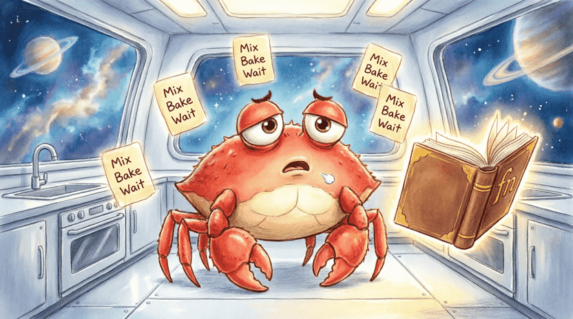
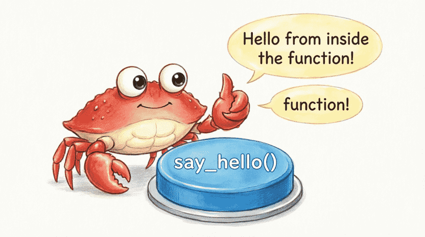
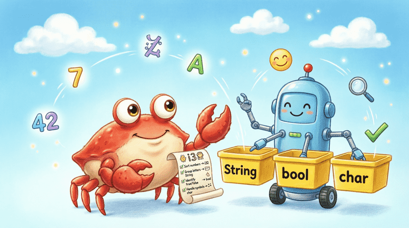
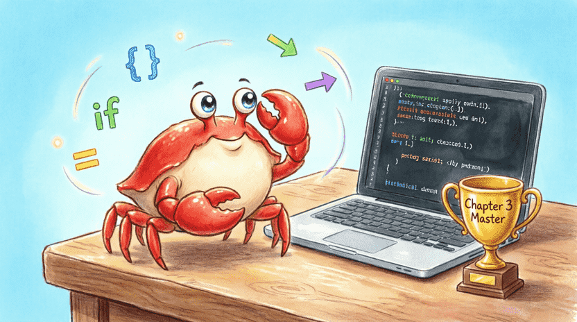

سرزمین راست: ماجراهای فریس خرچنگ فضایی
فصل ۳: دستور پخت کیک شکلاتی فضایی (توابع، پارامترها و انواع داده)
📑 فهرست فصل
۳.۱. مشکل بزرگ آشپزخانه
۳.۱.۱. داستان: فریس و کیک شکلاتی
۳.۱.۲. معرفی تابع به عنوان دستور پخت
۳.۱.۳. اولین تابع ساده
۳.۱.۴. صدا زدن تابع
۳.۲. ساخت ماشین جادویی (پارامترها و مقدار بازگشتی)
۳.۲.۱. تابع با پارامتر ورودی
۳.۲.۲. چند پارامتر
۳.۲.۳. مقدار بازگشتی با ->
۳.۲.۴. خروج زودهنگام با return
۳.۲.۵. تمرین: تابع ضرب و ترکیب
۳.۳. فرق آرد و شکر (Data Types)
۳.۳.۱. دستهبندی انواع
۳.۳.۲. اعداد صحیح (i32, u32)
۳.۳.۳. اعداد اعشاری (f64)
۳.۳.۴. منطقی (bool)
۳.۳.۵. کاراکتر (char)
۳.۳.۶. تاپل (Tuple) – جعبههای کنار هم
۳.۳.۷. آرایه (Array) – قفسهی مرتب
۳.۳.۸. تمرین: تاپل اطلاعات شخصی
۳.۴. یادداشتهای مخفی (Comments)
۳.۴.۱. کامنت خطی //
۳.۴.۲. کامنت چندخطی /* */
۳.۴.۳. چه زمانی کامنت بگذاریم؟
۳.۴.۴. تمرین: کامنتگذاری روی بازی حدس عدد
۳.۵. جمعبندی و پروژه
۳.۵.۱. مرور مفاهیم
۳.۵.۲. پروژه: ماشین حساب ساده
۳.۵.۳. چالش: بزرگترین عدد آرایه
۳.۱. مشکل بزرگ آشپزخانه
۳.۱.۱. داستان: فریس و کیک شکلاتی
فریس عاشق کیک شکلاتی فضاییه! 🍰 دستور پخت مخصوص مادربزرگش رو هم داره: «۲۰۰ گرم آرد، ۱۵۰ گرم شکر، ۳ تا تخممرغ، کمی وانیل، هم بزن و ۳۰ دقیقه بذار توی فر.»
مشکل اینجاست که فریس هر بار دلش کیک میخواد، مجبور میشه کل این مراحل رو از اول بنویسه و انجام بده. اگر ۱۰ تا کیک بخواد، باید ۱۰ بار همان کدهای تکراری رو بنویسه! خستهکنندهست، نه؟ 😮💨
توی برنامهنویسی هم دقیقاً همین اتفاق میافته. وقتی یک کار تکراری رو چند بار میخوایم انجام بدیم، نباید هر بار کدش رو از اول بنویسیم. راه حلش چیه؟ استفاده از تابع (Function) – راهی برای دستهبندی کردن دستورالعملها و استفاده دوباره از آنها. این دقیقاً همان کاریست که برنامهنویسهای حرفهای انجام میدهند تا کدشان مرتب و کوتاه باشد. با یادگیری توابع، یک قدم دیگر به جادوگر کامپیوتر شدن نزدیک میشوی! 🧙♂️
۳.۱.۲. معرفی تابع به عنوان دستور پخت
تابع دقیقاً مثل یک دستور پخت جادویی میمونه که یک اسم داره. هر وقت آن اسم رو صدا بزنی، تمام کارهای نوشتهشده توش رو انجام میده. حتی میتونی بهش مواد اولیه (پارامتر) بدی و نتیجهی آماده (مقدار بازگشتی) ازش بگیری. 🧁✨
توی Rust، توابع رو با کلمهی fn (مخفف function) میسازیم. خود main هم یک تابع خاصه که کامپایلر میدونه برنامه باید از آنجا شروع بشه.

۳.۱.۳. اولین تابع ساده
بیا یک تابع ساده بسازیم که فقط یک سلام چاپ کنه. اول یک پروژهی جدید بساز:
cargo new cake_functions
cd cake_functions
حالا توی src/main.rs این کد رو بنویس:
fn main() {
say_hello(); // صدا زدن تابع
}
// تعریف تابع ما
fn say_hello() {
println!("سلام از توی تابع!");
}🔹 fn say_hello() { ... } یعنی: «یک تابع به اسم say_hello بساز که ورودی نمیگیره و خروجی هم برنمیگردونه.»
🔹 توی main با نوشتن say_hello(); به کامپیوتر میگیم: «برو دستورات این تابع رو اجرا کن و برگرد.»
وقتی cargo run بزنی، خروجی اینه:
سلام از توی تابع!
۳.۱.۴. صدا زدن تابع
قدرت واقعی تابع وقتیه که بخوایم یک کار رو چند بار تکرار کنیم:
fn main() {
say_hello();
say_hello();
say_hello();
}دیدی چقدر راحت شد؟ به جای سه بار نوشتن println!، فقط اسم تابع رو صدا زدیم. اینطوری کدمون هم تمیزتره، هم خوندنش آسونتره! 🧹

👨👩👧 نکته برای والدین و مربیان
این فصل توابع را معرفی میکند – یک مفهوم بنیادی در تمام زبانهای برنامهنویسی. توابع به کودکان کمک میکنند تا باز استفاده از کد و دستهبندی را یاد بگیرند. اگر کودک در درک پارامترها یا مقدار بازگشتی少し مشکل داشت، نگران نباشید – در فصلهای بعدی بارها با آنها روبرو میشود. کتاب رسمی Rust فصل کاملی دربارهی توابع دارد:
doc.rust-lang.org/book/ch03-03-how-functions-work.html
۳.۲. ساخت ماشین جادویی (پارامترها و مقدار بازگشتی)
تابع say_hello همیشه یک کار ثابت انجام میداد. ولی توابع قدرتمندتر میتونن ورودی بگیرن و خروجی بدن. مثل یک ماشین جادویی که مواد خام میگیره و محصول نهایی تحویل میده! 🏭
۳.۲.۱. تابع با پارامتر ورودی
پارامتر مثل مواد اولیهایه که به دستور پخت میدیم. مثلاً تابعی میخوایم که اسم هر کسی رو بگیره و بهش سلام کنه:
#![allow(unused)]
fn main() {
fn greet(name: String) {
println!("سلام {}! خوش اومدی!", name);
}
}🔹 name: String یعنی: «این تابع یک پارامتر به اسم name از نوع String (متن) میگیره.»
🔹 توی بدنهی تابع، name مثل یک متغیر معمولی رفتار میشه.
حالا توی main صداش میزنیم:
fn main() {
greet(String::from("فریس"));
greet(String::from("سارا"));
}خروجی:
سلام فریس! خوش اومدی!
سلام سارا! خوش اومدی!
۳.۲.۲. چند پارامتر
میتونیم چند پارامتر رو با ویرگول از هم جدا کنیم:
fn bake_cake(flour_grams: i32, sugar_grams: i32, eggs: i32) {
println!("با {} گرم آرد، {} گرم شکر و {} تا تخممرغ کیک میپزم.",
flour_grams, sugar_grams, eggs);
}
fn main() {
bake_cake(200, 150, 3);
bake_cake(300, 200, 4); // کیک بزرگتر!
}۳.۲.۳. مقدار بازگشتی با ->
بعضی توابع نتیجهای تولید میکنن که میخوایم بعداً ازش استفاده کنیم. مثلاً تابعی که دو عدد رو جمع کنه و حاصل رو برگردونه. برای این کار از -> و نوع خروجی استفاده میکنیم:
fn add(a: i32, b: i32) -> i32 {
a + b
}
fn main() {
let sum = add(5, 3);
println!("۵ + ۳ = {}", sum);
}⚠️ نکتهی طلایی Rust: در Rust، آخرین عبارت تابع بدون نقطهویرگول (;) به عنوان مقدار بازگشتی در نظر گرفته میشه. توی مثال بالا a + b نقطهویرگول نداره، پس مقدارش برگردانده میشه.
اگر تهش ; بذاری (a + b;)، کامپایلر فکر میکنه تابع هیچی برنمیگردونه و چون قول دادی i32 برگردونی، خطا میده!
۳.۲.۴. خروج زودهنگام با return
گاهی میخوایم وسط تابع، بدون اینکه به انتها برسیم، از تابع خارج بشیم و یک مقدار خاص رو برگردونیم. برای این کار از کلمهی return استفاده میکنیم. مثال: تابعی که اگر عدد منفی باشد، صفر برگرداند (چون طول نمیتونه منفی باشه):
fn safe_length(n: i32) -> i32 {
if n < 0 {
return 0; // فوری برگرد، دیگه ادامه نده
}
n // اگر منفی نبود، خود عدد رو برگردان
}
fn main() {
println!("طول مجاز: {}", safe_length(-5)); // 0
println!("طول مجاز: {}", safe_length(10)); // 10
}return مثل دکمهی «فرار سریع» از تابعه! 🏃♂️💨
🧠 گاهی بعضی چیزها سخت است، و این اشکالی ندارد!
پارامترها و مقدار بازگشتی ممکن است در ابتدا سنگین به نظر برسند. حتی بزرگسالان هم برای تسلط بر آنها به تمرین نیاز دارند. اگر امروز همه چیز را کامل نفهمیدی، نگران نباش – در فصلهای بعدی بارها از توابع استفاده خواهی کرد.
۳.۲.۵. تمرین: تابع ضرب و ترکیب
۱. یک تابع به اسم multiply بنویس که دو عدد i32 بگیره و حاصلضربشون رو برگردونه.
۲. توی main صداش بزن و نتیجه رو چاپ کن.
۳. یک تابع دیگه به اسم square بنویس که یک عدد بگیره و با استفاده از multiply مربعش رو حساب کنه.
💡 پاسخ نمونه:
fn multiply(x: i32, y: i32) -> i32 {
x * y
}
fn square(x: i32) -> i32 {
multiply(x, x) // از تابع ضرب استفاده میکنیم
}
fn main() {
let num = 7;
let sq = square(num);
println!("مربع {} برابر است با {}", num, sq);
}![[Illustration: A friendly robot machine labeled “fn” with input hoppers for “flour”, “sugar”, “eggs” and an output conveyor belt delivering a glowing “Cake Result”. Rust syntax arrows connect inputs to outputs. Ferris watches proudly holding a slice. Style: educational cartoon, bright, technical metaphor for children.]](assets/images/3.3.png)
۳.۳. فرق آرد و شکر (Data Types)
توی آشپزی نمیتونی به جای شکر نمک بریزی (مگر اینکه بخوای کیک شور داشته باشی! 🧂). توی برنامهنویسی هم هر داده یک نوع (Type) مشخص داره. Rust خیلی دقیقه و اگر نوعها رو قاطی کنی، کامپایلر سریع تذکر میده. این دقت جلوی خیلی از خرابیها رو میگیره! 🛡️
۳.۳.۱. دستهبندی انواع
انواع داده توی Rust به دو گروه اصلی تقسیم میشن:
🔹 اسکالر (Scalar): یک مقدار تکی. مثل یک عدد، یک حرف، یا یک مقدار درست/غلط.
🔹 کامپوزیت (Compound): مجموعهای از چند مقدار. مثل تاپل و آرایه.
۳.۳.۲. اعداد صحیح (i32, u32)
اعداد صحیح یعنی اعداد بدون اعشار (مثل 5, -42, 0). Rust چند نوع داره که مهمترینشون:
| نوع | علامت | محدوده تقریبی | کاربرد رایج |
|---|---|---|---|
i32 | مثبت و منفی | حدود ۲- میلیارد تا ۲+ میلیارد | پیشفرض برای اعداد صحیح |
u32 | فقط مثبت | ۰ تا حدود ۴ میلیارد | برای شمارش، اندیسها |
مثال:
#![allow(unused)]
fn main() {
let temperature = -5; // Rust خودش i32 در نظر میگیره
let age: u32 = 12; // نوع رو صریحاً مشخص کردیم
let byte: u8 = 255; // یک بایت (۰ تا ۲۵۵)
}۳.۳.۳. اعداد اعشاری (f64)
وقتی به دقت اعشار نیاز داریم (مثل 3.14 یا 2.718) از اینا استفاده میکنیم:
🔹 f32: دقت کمتر، ۳۲ بیت.
🔹 f64: دقت بیشتر، ۶۴ بیت. پیشفرض برای اعداد اعشاری.
#![allow(unused)]
fn main() {
let pi = 3.1415926535; // f64
let gravity: f32 = 9.81; // f32
}۳.۳.۴. منطقی (bool)
فقط دو مقدار میتونه داشته باشه: true (درست) یا false (غلط). خیلی توی شرطها به کار میاد:
#![allow(unused)]
fn main() {
let is_raining = true;
let has_umbrella = false;
if is_raining && !has_umbrella {
println!("واااای خیس میشیم!");
}
}۳.۳.۵. کاراکتر (char)
یک حرف، عدد، یا حتی شکلک (emoji). توی Rust هر char چهار بایت فضا میگیره و میتونه هر کاراکتری رو نگه داره. با گیومهی تکی نوشته میشه:
#![allow(unused)]
fn main() {
let first_letter = 'A';
let digit = '7';
let smiley = '😊';
let crab = '🦀'; // خود فریس!
}۳.۳.۶. تاپل (Tuple) – جعبههای کنار هم
تاپل راهیه برای کنار هم گذاشتن چند مقدار با انواع متفاوت. طول تاپل ثابته (نمیشه بعداً چیزی اضافه یا کم کرد).
#![allow(unused)]
fn main() {
let ferris_info = ("فریس", 42, true, '🦀');
}برای دسترسی به اعضا از نقطه و شماره اندیس (از صفر شروع میشه) استفاده میکنیم:
#![allow(unused)]
fn main() {
println!("اسم: {}", ferris_info.0); // فریس
println!("سن: {}", ferris_info.1); // 42
println!("خوشحاله؟ {}", ferris_info.2); // true
}میتونی تاپل رو «بشکنی» (Destructure) و مقادیر رو توی متغیرهای جداگانه بریزی:
#![allow(unused)]
fn main() {
let (name, age, is_happy, emoji) = ferris_info;
println!("{} {} سالشه و شکلک مورد علاقش {}", name, age, emoji);
}۳.۳.۷. آرایه (Array) – قفسهی مرتب
آرایه مجموعهای از چند مقداره که همه از یک نوع هستن و طولشون ثابته. مثل یک قفسه با تعداد خانهی مشخص که تو هر خونه فقط یک نوع وسیله میتونی بذاری.
#![allow(unused)]
fn main() {
let numbers = [10, 20, 30, 40, 50];
let first = numbers[0]; // 10
let third = numbers[2]; // 30
}اگر بخوای آرایهای با یک مقدار تکراری پر کنی:
#![allow(unused)]
fn main() {
let all_fives = [5; 10]; // یعنی [5, 5, 5, 5, 5, 5, 5, 5, 5, 5]
}📌 یک نکته برای آینده: آرایه طولش ثابته و سریع کار میکنه. بعداً نوع دیگری به اسم Vec (وکتور) یاد میگیری که میتونه بزرگ و کوچک بشه.
۳.۳.۸. تمرین: تاپل اطلاعات شخصی
یک تاپل شامل اطلاعات خودت بساز: اسم (String)، قد به سانتیمتر (f64)، و اینکه آیا حیوان خانگی داری (bool). سپس با تخریب تاپل، هر کدوم رو توی متغیر جداگانه بریز و با یک جمله چاپ کن.
💡 پاسخ نمونه:
fn main() {
let my_info = (String::from("آریا"), 145.5, true);
let (name, height, has_pet) = my_info;
println!("اسم من {} است. قدم {} سانتیمتره.", name, height);
if has_pet {
println!("من یک حیوان خانگی دارم! 🐾");
} else {
println!("من حیوان خانگی ندارم. 😢");
}
}
۳.۴. یادداشتهای مخفی (Comments)
گاهی وقتها میخوایم توضیحاتی توی کد بنویسیم که کامپیوتر اونا رو نادیده بگیره، ولی خودمون (یا دوستامون) بعداً بتونیم بخونیم و بفهمیم چرا این کد رو نوشتیم. به این یادداشتها کامنت (Comment) میگن. 📝
۳.۴.۱. کامنت خطی //
هر چیزی بعد از دو علامت اسلش // توی همان خط، کامنت محسوب میشه و کامپایلر کلاً ازش چشمپوشی میکنه:
#![allow(unused)]
fn main() {
// این یک کامنت است
let x = 5; // این هم یک کامنت در انتهای خط
}۳.۴.۲. کامنت چندخطی /* */
اگر بخوای چند خط توضیح بنویسی، میتونی از /* برای شروع و */ برای پایان استفاده کنی:
#![allow(unused)]
fn main() {
/*
این یک کامنت طولانیه.
میتونی اینجا هر توضیحی که دوست داری بنویسی.
کامپایلر کلاً این بخش رو نمیخونه.
*/
fn do_something() { }
}۳.۴.۳. چه زمانی کامنت بذاریم؟
✅ کامنت خوب:
- توضیح میده چرا این کد به این شکل نوشته شده (مثلاً «چون کتابخانهی X یک باگ دارد، مجبوریم اینجا از روش Y استفاده کنیم»).
- بخشهای پیچیدهی برنامه رو برای آینده مستند میکنه.
- کارهای ناتمام رو علامت میزنه:
// TODO: این بخش رو بعداً کامل کن.
❌ کامنت بد:
- چیزی رو توضیح بده که از خود کد کاملاً مشخصه.
مثلاً:x = x + 1; // یکی به x اضافه کن(خود کد دقیقاً همین رو میگه!)
۳.۴.۴. تمرین: کامنتگذاری روی بازی حدس عدد
کد بازی حدس عدد از فصل ۲ رو باز کن. برای هر بخش مهم (تولید عدد تصادفی، گرفتن ورودی، تبدیل نوع، مقایسه) یک کامنت کوتاه توضیحی اضافه کن. ببین چقدر خوندن کد برات راحتتر میشه! 🧐
![[Illustration: Ferris wearing a detective hat, writing a secret note inside a glowing code file. A small compiler robot next to him wears sunglasses and ignores the note. Background: cozy desk with coffee and books. Style: whimsical children’s book illustration, soft lighting.]](assets/images/3.5.png)
۳.۵. جمعبندی و پروژه
۳.۵.۱. مرور مفاهیم
توی این فصل یاد گرفتی:
✅ تابع چیه و چطور با fn تعریف میشه.
✅ چطور به تابع پارامتر بدیم و ازش مقدار بازگشتی بگیریم (->).
✅ تفاوت return با آخرین عبارت بدون نقطهویرگول.
✅ انواع دادهی اصلی: اعداد صحیح و اعشاری، bool، char.
✅ تاپل برای نگهداری چند مقدار با انواع متفاوت.
✅ آرایه برای نگهداری چند مقدار همنوع با طول ثابت.
✅ کامنتها برای مستندسازی و خوندن راحتتر کد.
✅ اینکه هر کد تکراری را میتوان در یک تابع جا داد – این یعنی گامی دیگر به سمت جادوگر کامپیوتر شدن! 🧙
۳.۵.۲. پروژه: ماشین حساب ساده
برنامهای بنویس که دو عدد اعشاری (f64) و یک عملگر (+, -, *, /) از کاربر بگیره و نتیجه رو چاپ کنه. برای هر عمل یک تابع جداگانه بنویس.
💡 راهنمایی ساختار:
use std::io;
fn add(a: f64, b: f64) -> f64 { a + b }
fn subtract(a: f64, b: f64) -> f64 { a - b }
fn multiply(a: f64, b: f64) -> f64 { a * b }
fn divide(a: f64, b: f64) -> f64 { a / b }
fn main() {
// گرفتن ورودی از کاربر (مثل فصل ۲)
// استفاده از if یا match برای تشخیص عملگر و صدا زدن تابع مناسب
// اگر عملگر '/' بود و عدد دوم صفر بود، پیام خطا بده (چون تقسیم بر صفر ممکن نیست)
}🎁 چالش اضافه: اگر کاربر عملگر نامعتبری وارد کرد، پیام خطا بده و دوباره بپرس (میتونی از loop استفاده کنی).
۳.۵.۳. چالش: بزرگترین عدد آرایه
یک تابع به اسم max_in_array بنویس که یک آرایه از اعداد i32 (یا یک برش از آن) بگیره و بزرگترین مقدار داخلش رو برگردونه.
💡 راهنمایی: یک متغیر max با مقدار عنصر اول بساز و با یک حلقه (loop یا while) بقیه رو مقایسه کن. (هنوز for را یاد نگرفتهای، پس از while استفاده کن.)
💡 پاسخ نمونه با while:
fn max_in_array(arr: &[i32]) -> i32 {
let mut max = arr[0];
let mut i = 1;
while i < arr.len() {
if arr[i] > max {
max = arr[i];
}
i = i + 1;
}
max
}
fn main() {
let numbers = [15, 42, 7, 99, 23];
let result = max_in_array(&numbers);
println!("بزرگترین عدد: {}", result);
}📌 نکته: &[i32] یعنی «یک مرجع به یک برش (slice) از اعداد i32». این به تابع اجازه میده بدون اینکه مالک آرایه بشه، به محتویاتش نگاه کنه. توی فصل بعد مفصل دربارهی این «اجازهها» حرف میزنیم!
